Sistemas Digitais · Ibmec RJ
Objetivos de aprendizagem
2.1 / álgebra booleana
A base do nosso estudo é o conceito de proposição: oração declarativa afirmativa ou negativa sobre a qual se pode atribuir um, e somente um, valor lógico — falso (F) ou verdadeiro (V).
convenção adotada
F = 0 e V = 1. Também conhecida como sentença fechada.
A proposição que contém apenas uma afirmação ou negação é chamada de proposição simples. Proposições simples podem ser concatenadas, gerando proposições compostas, por meio de operadores lógicos que indicam operações lógicas.
As operações lógicas primitivas são: conjunção, disjunção e negação.
A proposição composta S resultante da conjunção de duas proposições simples p e q:
Lê-se "S é igual a p e q". O resultado depende dos valores lógicos de p e q:
| p·q | p | q |
|---|---|---|
| 0 | 0 | 0 |
| 0 | 0 | 1 |
| 0 | 1 | 0 |
| 1 | 1 | 1 |
A proposição composta S resultante da disjunção de duas proposições simples p e q:
Lê-se "S é igual a p ou q":
| p+q | p | q |
|---|---|---|
| 0 | 0 | 0 |
| 1 | 0 | 1 |
| 1 | 1 | 0 |
| 1 | 1 | 1 |
A proposição composta S resultante da operação unária (um único operando) de negação de uma proposição simples p:
Lê-se "S é igual a não p":
| p̄ | p |
|---|---|
| 1 | 0 |
| 0 | 1 |
| Operação | Operadores |
|---|---|
| Conjunção | $\land$, e |
| Disjunção | $\lor$, ou |
| Negação | $\bar{X}$, não |
As expressões lógicas consistem na operação de proposições por meio de operadores lógicos, cujo resultado depende do valor lógico de cada proposição constituinte.
() → [] → {}.Tautologia
Sempre resulta em 1 para todas as combinações
Contradição
Sempre resulta em 0 para todas as combinações
Equivalência lógica
Duas proposições produzem resultados iguais para cada combinação
2.2 / tabela-verdade
As tabelas-verdade representam todas as combinações de saída das funções de variáveis. São formadas pelas colunas das variáveis, colunas intermediárias (opcionais) e uma única coluna de saída.
| n colunas de entrada | Colunas intermediárias | 1 coluna de saída |
|---|---|---|
| Combinação 0 | ... | Saída 0 |
| ... | ... | ... |
| Combinação $2^n-1$ | ... | Saída $2^n-1$ |
Os circuitos eletrônicos digitais implementam funções lógicas.
2.3 / portas lógicas
Os circuitos digitais utilizam dois níveis de sinais lógicos elétricos: H (high, alto) e L (low, baixo) — abstraídos matematicamente como 1 e 0.
Além dos sinais lógicos, os circuitos digitais utilizam tensão de alimentação contínua ($V_{CC}$) e referência de terra (GROUND). Os componentes básicos são as portas lógicas ou gates — dispositivos com duas ou mais entradas e uma saída resultante da operação lógica das entradas naquele instante.
Implementa a operação de disjunção.
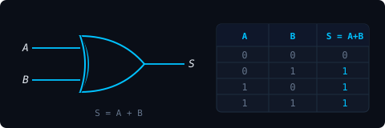
Fig. 2.1 — Porta OR
Fabricantes como a Texas Instruments produzem as portas OR SN54HC32/SN74HC32.
Implementa a operação de conjunção.
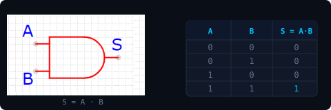
Fig. 2.2 — Porta AND
A Motorola fabrica as portas AND MC14081/MC14082. A Philips fabrica as 74HC08N.
Implementa a operação de negação.
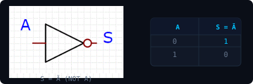
Fig. 2.3 — Inversor NOT
A Philips produz os inversores 7404.
Circuitos combinacionais
A saída depende unicamente da combinação das entradas em um dado instante.
Circuitos sequenciais
Possuem memória — a saída depende das entradas e da saída no instante anterior.
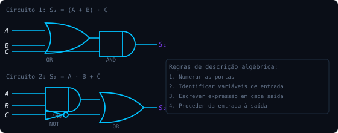
Fig. 2.4 — Exemplos de circuitos combinacionais
A descrição algébrica dos circuitos está indicada na saída de cada um. Cada saída é uma função das entradas, à qual corresponde uma tabela-verdade.
2.4 / teoremas e axiomas
Expressões booleanas diferentes podem apresentar o mesmo resultado lógico para todas as combinações de entradas — são logicamente equivalentes. Portanto, circuitos diferentes podem implementar a mesma função.
No projeto de circuitos digitais, normalmente deseja-se o menor número possível de componentes: mais baratos, menor espaço físico, menor energia, mais fáceis de manter.
axiomas vs. teoremas
Axiomas: premissas verdadeiras, indemonstráveis. Teoremas: proposições demonstráveis a partir de outras proposições e axiomas.
Comutatividade
$A \cdot B = B \cdot A$ · $A + B = B + A$
Associatividade
$A(BC)=(AB)C$ · $A+(B+C)=(A+B)+C$
Distributividade
$A(B+C)=AB+AC$
Elemento neutro
$A \cdot 1 = A$ · $A + 0 = A$
Elemento nulo
$A \cdot 0 = 0$ · $A + 1 = 1$
Elemento inverso
$A \bar{A} = 0$ · $A+\bar{A}=1$
Idempotência
$A \cdot A = A$ · $A+A=A$
Dupla negação
$\bar{\bar{A}} = A$
Adjacência lógica
$\bar{A}B + AB = B$
Absorção
$A+AB=A$ · $A+\bar{A}B=A+B$
Da conjunção — a negação da conjunção é igual à disjunção das variáveis negadas:
Da disjunção — a negação da disjunção é igual à conjunção das variáveis negadas:
Aplicando sucessivamente os teoremas e axiomas, é possível reduzir expressões — a original e a reduzida são logicamente equivalentes.
Tautologia
Sempre resulta em 1
Contradição
Sempre resulta em 0
Contingência
Pode assumir 0 ou 1 conforme as entradas
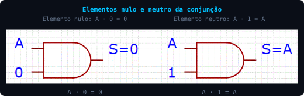
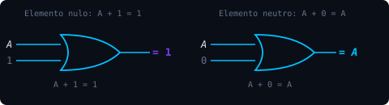
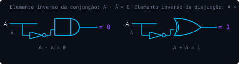
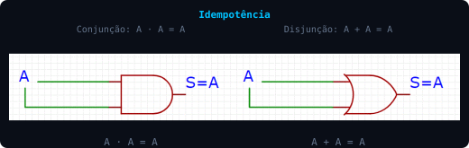
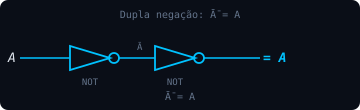
2.5 / portas universais
Além de AND, OR e NOT, existem duas portas denominadas portas universais — somente com um único tipo delas é possível implementar circuitos descritos por quaisquer expressões lógicas.
Implementa a operação de negação da disjunção.
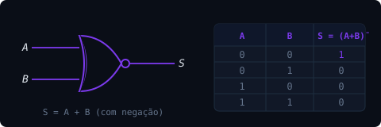
Fig. 2.5 — Porta NOR
A Texas Instruments produz as portas SN54HC02/SN74HC02.
Implementa a operação de negação da conjunção.
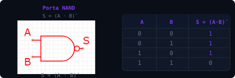
Fig. 2.6 — Porta NAND
A Texas Instruments produz a série CD4011/CD4012/CD4023. A Philips produz a 74HC00.
checkpoint
Em uma porta AND de 2 entradas, quantas combinações de entrada resultam em saída 1?
Pelo Teorema de De Morgan, $\overline{A \cdot B}$ é equivalente a:
Por que NAND e NOR são chamadas de "portas universais"?
referências e aprofundamento